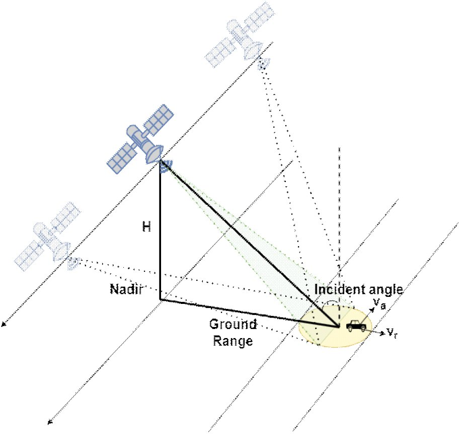

연구실적 · 국내전문학술지
이동 표적 탐지 및 추적을 위한 단일 채널 기반 고해상도 위성 SAR 영상 모드 구현
High-Resolution Spotlight Mode Design for Moving Target Detection and Tracking Using a Single-Channel Spaceborne SAR System

초록
합성 개구 레이다(synthetic aperture radar)는 높은 해상도의 영상을 형성하기 위해 비교적 긴 시간 동안 신호를 수집한다. 이동 표적의 경우, 합성 개구 레이다에서 신호를 수집하는 동안 지속적으로 이동하기 때문에, 합성 개구 레이다 영상의 초점이 흐려지며, 방위 방향의 이동 및 퍼짐 현상이 발생한다. 이에 따라, 해외에서는 이동 표적 탐지를 수행하는 연구가 수행되고 있으며, 단일 안테나를 활용하여 이동 표적을 탐지하는 대표적인 방안으로는 이동 표적의 그림자를 추적하거나 부분 조리개(sub-aperture)를 활용하는 기법이 제시된다. 부분 조리개 활용 기법은 이동 표적의 에너지가 방위 방향으로 퍼져 흐려지는 현상을 줄일 수 있어 이동 표적을 식별하는 데 용이하다. 또한 부분 조리개의 다중 프레임 구조를 활용하여 이동 표적의 이동 방향 및 속도에 대한 정보를 획득할 수 있다. 따라서 본 논문에서는 부분 조리개 기반 이동 표적 탐지를 위한 시뮬레이터를 설계하고, 시뮬레이터를 기반으로 다중 프레임 구조 영상을 연속적으로 제시하여 이동 표적 추적을 수행한다.
인용
In-Mo Ban, Hwi-jeong Jo, Seok-Won Lee, Myeong-jin Lee, Woo-Kyung Lee, Kwanggoo Yeo, “이동 표적 탐지 및 추적을 위한 단일 채널 기반 고해상도 위성 SAR 영상 모드 구현”, 한국전자파학회논문지, 제34권 3호, 2023년
BibTeX
@article{Ban_2023,
title={High-Resolution Spotlight Mode Design for Moving Target Detection and Tracking Using a Single-Channel Spaceborne SAR System},
volume={34},
ISSN={2288-226X},
url={http://dx.doi.org/10.5515/kjkiees.2023.34.3.176},
DOI={10.5515/kjkiees.2023.34.3.176},
number={3},
journal={The Journal of Korean Institute of Electromagnetic Engineering and Science},
publisher={Korean Institute of Electromagnetic Engineering and Science},
author={Ban, In-Mo and Jo, Hwi-jeong and Lee, Seok-Won and Lee, Myeong-jin and Lee, Woo-Kyung and Kwanggoo, Yeo},
year={2023},
month=Mar,
pages={176–189}
}